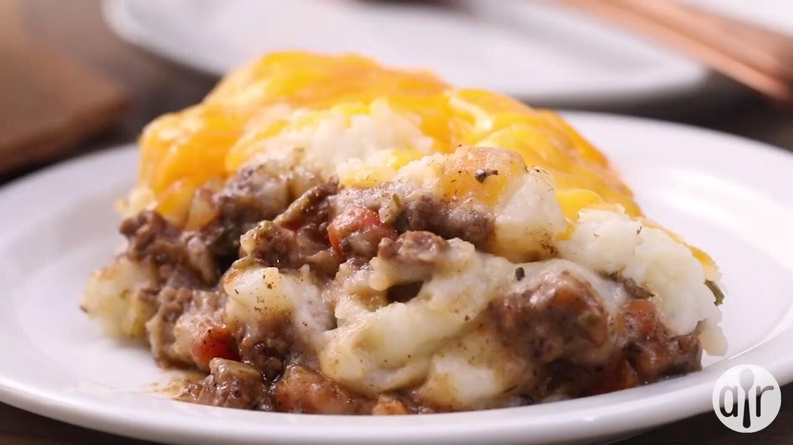

Cottage Pie

Nostalgic homemade cottage pie in under an hour!
Ingredients:
- 1lb seasoned ground beef
- 1 16oz can baked beans
- 4 large russet potatoes-whipped with butter, cream, salt, and pepper to taste
- 1 block Velveeta cheese
- Your favorite hot sauce to taste(optional)
Steps:
- Preheat oven to 350 degrees
- Boil potatoes until soft
- Cook ground beef in skillet and season to taste
- Strain potatoes and whip with butter, cream, salt, and pepper to taste
- Strain and chop ground beef
- Add beef to a large pot
- Strain baked beans and layer on top of beef
- Slice half of the Velveeta block and layer on top of beans
- Layer whipped potatoes over cheese
- Slice the remaining cheese and layer on top of potatoes
- Cover pot and cook in oven until cheese is melted
- Enjoy!